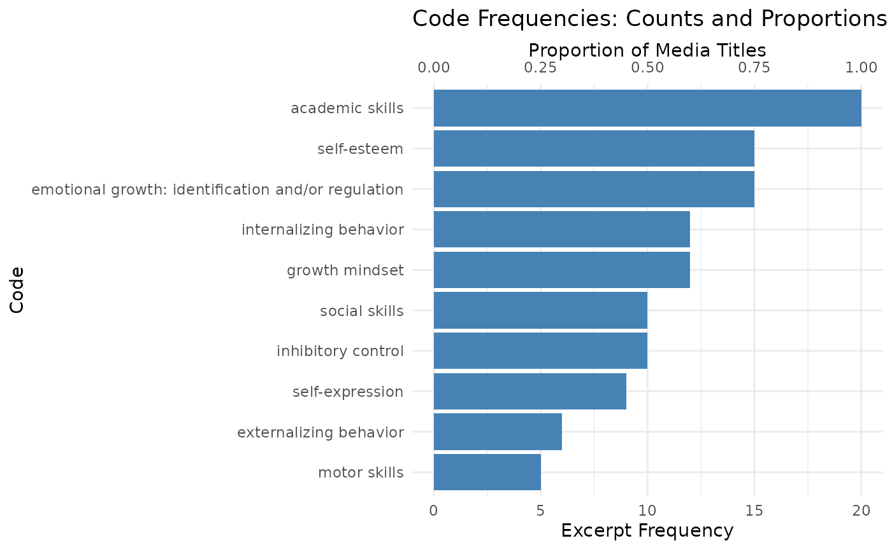

Using our same mock dataset, we can generate a summary of our codes
using the create_code_summary() function. This function
does several nifty things:
- Summarizes code counts and the proportion of transcripts/media objects they come
- Allows you to set a min count or proportion for the summary output
- Optionally plots the counts, proportions or both
- Optionally allows you to use code labels instead of variable names
(using the codebook generated by
clean_data()!)
If you knitted the Cleaning, Merging, and Exploring Qualitative
Data vignette just before this one, you already have
recoded$data_recode and
recoded$codebook_recode in your environment. The chunk
below recreates them so this article is self-contained—feel free to skip
it when reusing objects from the prior tutorial.
library(DedooseR)
library(tibble)
# Mock excerpts that mimic a Dedoose export ----------------------------------
code_order <- c(
"Motor Skills",
"Social Skills",
"Self-expression",
"Emotional Regulation",
"Emotion Identification",
"Inhibitory Control",
"Internalizing Behavior",
"Externalizing Behavior",
"Academic Skills",
"Self-esteem",
"Growth Mindset"
)
code_weights <- c(
"Motor Skills" = 1,
"Social Skills" = 1,
"Self-expression" = 1,
"Emotional Regulation" = 2,
"Emotion Identification" = 2,
"Inhibitory Control" = 1,
"Internalizing Behavior" = 2,
"Externalizing Behavior" = 1,
"Academic Skills" = 1,
"Self-esteem" = 1,
"Growth Mindset" = 1
)
code_assignments <- list(
c("Motor Skills", "Social Skills", "Self-expression", "Academic Skills", "Self-esteem", "Growth Mindset"),
c("Social Skills", "Emotional Regulation", "Emotion Identification", "Inhibitory Control", "Externalizing Behavior", "Academic Skills", "Growth Mindset"),
c("Self-expression", "Emotional Regulation", "Emotion Identification", "Internalizing Behavior", "Academic Skills", "Self-esteem"),
c("Social Skills", "Self-expression", "Emotion Identification", "Inhibitory Control", "Academic Skills", "Self-esteem", "Growth Mindset"),
c("Emotional Regulation", "Emotion Identification", "Internalizing Behavior", "Externalizing Behavior", "Academic Skills", "Self-esteem"),
c("Motor Skills", "Emotional Regulation", "Inhibitory Control", "Internalizing Behavior", "Academic Skills", "Growth Mindset"),
c("Social Skills", "Self-expression", "Externalizing Behavior", "Academic Skills", "Self-esteem"),
c("Motor Skills", "Social Skills", "Emotional Regulation", "Inhibitory Control", "Academic Skills", "Self-esteem", "Growth Mindset"),
c("Self-expression", "Emotional Regulation", "Emotion Identification", "Inhibitory Control", "Internalizing Behavior", "Academic Skills", "Self-esteem", "Growth Mindset"),
c("Social Skills", "Emotional Regulation", "Internalizing Behavior", "Externalizing Behavior", "Academic Skills", "Self-esteem"),
c("Self-expression", "Emotion Identification", "Inhibitory Control", "Internalizing Behavior", "Academic Skills", "Growth Mindset"),
c("Social Skills", "Emotional Regulation", "Internalizing Behavior", "Academic Skills", "Self-esteem"),
c("Motor Skills", "Self-expression", "Inhibitory Control", "Academic Skills", "Self-esteem", "Growth Mindset"),
c("Emotional Regulation", "Emotion Identification", "Externalizing Behavior", "Academic Skills", "Self-esteem"),
c("Social Skills", "Internalizing Behavior", "Academic Skills", "Growth Mindset"),
c("Motor Skills", "Emotional Regulation", "Inhibitory Control", "Internalizing Behavior", "Academic Skills", "Self-esteem"),
c("Self-expression", "Emotion Identification", "Internalizing Behavior", "Academic Skills", "Self-esteem", "Growth Mindset"),
c("Social Skills", "Emotional Regulation", "Inhibitory Control", "Externalizing Behavior", "Academic Skills", "Self-esteem"),
c("Self-expression", "Internalizing Behavior", "Academic Skills", "Growth Mindset"),
c("Social Skills", "Emotional Regulation", "Emotion Identification", "Inhibitory Control", "Internalizing Behavior", "Academic Skills", "Self-esteem", "Growth Mindset")
)
demo_excerpts <- tibble(
`Media Title` = c(
"Interview: Opening Circle",
"Focus Group: Rhythm Relay",
"Interview: Alumni Showcase",
"Classroom Observation: Lyric Lab",
"Journal Club: Campfire Reflections",
"Parent Interview: Practice Night",
"Coach Debrief: Studio Session",
"Interview: Teen Beat Makers",
"Workshop: Beat Mapping",
"Focus Group: Mentor Circle",
"Observation: Homework Jam",
"Interview: Closing Showcase",
"Survey Comment: Quiet Camper",
"Survey Comment: Confident Soloist",
"Interview: Leadership Huddle",
"Observation: Peer Pairing",
"Focus Group: Reflection Rounds",
"Interview: New Camper",
"Observation: Goal Setting",
"Workshop: Improvisation Lab"
),
`Excerpt Range` = c(
"Excerpt 12-56",
"Excerpt 04-38",
"Excerpt 77-112",
"Excerpt 15-42",
"Excerpt 33-80",
"Excerpt 08-29",
"Excerpt 21-48",
"Excerpt 44-78",
"Excerpt 63-97",
"Excerpt 10-35",
"Excerpt 52-85",
"Excerpt 18-41",
"Excerpt 71-103",
"Excerpt 26-50",
"Excerpt 39-72",
"Excerpt 14-36",
"Excerpt 58-90",
"Excerpt 23-47",
"Excerpt 66-101",
"Excerpt 30-63"
),
`Excerpt Creator` = c(
"Aliyah",
"Rohan",
"Aliyah",
"Lina",
"Mateo",
"Priya",
"Lina",
"Rohan",
"Aliyah",
"Mateo",
"Priya",
"Jordan",
"Aliyah",
"Rohan",
"Jordan",
"Priya",
"Lina",
"Mateo",
"Jordan",
"Priya"
),
`Excerpt Date` = as.Date(c(
"2023-06-10",
"2023-07-18",
"2024-01-08",
"2023-07-24",
"2023-08-05",
"2023-08-12",
"2023-08-19",
"2023-08-26",
"2023-09-02",
"2023-09-09",
"2023-09-16",
"2023-09-23",
"2023-09-30",
"2023-10-07",
"2023-10-14",
"2023-10-21",
"2023-10-28",
"2023-11-04",
"2023-11-11",
"2023-11-18"
)),
`Excerpt Copy` = c(
"Keeping the djembe rhythm steady made my hands stronger, and pairing up for call-and-response helped the nervous kids giggle and join in. We counted the measures together like a quick math warmup, and they kept testing new patterns until they could hear their confidence rise.",
"During the rhythm relay, we practiced breathing between verses so the kids could wait for their cue instead of jumping in early. Mapping the rhymes to eight-count phrases let them chart syllables like a fractions lesson, and when one camper shouted over the group we paused to name the frustration, reset, and talk about how mistakes fuel the next take.",
"When I get mad now, I write a hook about it first. It helps me spot the feeling, note the anxious thoughts that used to stay bottled up, and decide whether I want to shout it or sing it soft. Drafting verses in my notebook also keeps my reading teacher happy because I'm practicing structure while I hype myself up.",
"In lyric lab the trio revised their chorus, taking turns so nobody rushed the mic while they jotted rhyme schemes on the whiteboard. Naming which lines sounded brave versus nervous let them cheer each other on, and the rewrites doubled as a grammar check that made them proud to keep refining.",
"During the campfire reflection, one camper admitted that she sometimes shuts down when we practice sad songs. Now, we check in during practice to spot evidence for those feelings and share coping plans when needed",
"On practice night we tapped the rim pattern slowly so the shy drummer could breathe through the butterflies and wait for the downbeat before attacking the snare. They tracked tempos in a spreadsheet for homework, proving to themselves that patient repetitions improve control even when anxiety creeps in mid-song.",
"During the studio session debrief, the counselors noted how Tasha's freestyles shifted from loud interruptions to collaborative echoes once we rehearsed conversation stems. She marked the beats she wanted to emphasize on her lyric worksheet, and bragged that the script gave her confidence without shutting down her big energy.",
"The teen beat makers synced their keyboard riffs with the drum pad, counting rests together so each person held back until the loop called for them. Charting the chord inversions on staff paper turned into a mini theory lesson, and the crew loved seeing how breathing through the tricky hand switch built real confidence.",
"Aliyah's notebook shows mood colors beside every verse, and she journals how the sadness feels in her chest before choosing whether to rap or sing the line. She keeps a checklist of revision strategies from literacy class, reminding herself to pause, name the feeling, and try another take until the lyric matches her intention.",
"In mentor circle today the group mapped conflict scripts, role-playing the kid who shuts down and the kid who pops off. They located sentence starters from our reading packet to practice calm responses, and sharing wins boosted the quieter campers' confidence.",
"During homework jam we slowed spoken word drafts, pausing at commas to note the emotions driving each line. Writing margin notes about the worry behind certain phrases helped them see how breathing before the final stanza keeps the story clear while they revise.",
"At the closing showcase interview, Jordan described how the ensemble now checks in with thumbs before feedback so anxious singers feel seen. They referenced the critique rubric like a reading comprehension guide, and noticing their own growth made them stand taller on stage.",
"While recording harmonies Aliyah plotted fingerings on a tablature grid and waited for the metronome click before sliding into the chorus. Tracking the takes in her practice journal showed how deliberate pacing builds confidence and keeps her chasing new techniques.",
"Rohan noted that the lunchtime cypher got loud when Jace joked through the tension, so we paused to label the frustration and mark triggers on the behavior chart. Translating that moment into a reflective paragraph later helped Jace feel proud of naming the shift before it exploded again.",
"In leadership huddle the mentors graphed how their small-group questions improved week to week, even when nerves made them rush. Studying discussion transcripts for evidence of follow-up prompts showed them that practicing new openings pays off.",
"During peer pairing, Malik clenched up before solos, so we rehearsed counting four silent beats before striking the bell tree. Logging each attempt on a progress chart proved to him that steady breathing and restraint can tame the worry he carries in.",
"Reflection rounds had artists reread their zine entries, underline words tied to fear or hope, and then rewrite one stanza to show the shift. Sharing those drafts aloud left them buzzing about how revising with evidence from the text made their voices feel stronger.",
"The new camper interview highlighted how staff coached a quick-to-shout drummer to tap the rim twice before speaking, giving peers room to weigh in. Charting discussion norms on the whiteboard doubled as a literacy task and she beamed about channeling her volume into support.",
"Goal setting sessions have teens draft personal learning targets, then annotate lyrics to show where they pushed past stage fright. Keeping that evidence log convinces them their writing muscles grow with each revision.",
"In improvisation lab the facilitator had everyone breathe twice, name the dominant feeling, and raise a hand before adding to the groove. They cited vocabulary from literacy night to explain their choices, and each success at pausing built their belief that they can stretch the next idea even further."
),
`Resource Creator` = c(
"Camp Director",
"Evaluation Lead",
"Alumni Coordinator",
"Program Researcher",
"School Liaison",
"Behavior Specialist",
"Camp Director",
"Program Researcher",
"Counselor Team Lead",
"Behavior Specialist",
"Evaluation Lead",
"School Liaison",
"Camp Director",
"Behavior Specialist",
"Program Researcher",
"Counselor Team Lead",
"Evaluation Lead",
"Camp Director",
"Program Researcher",
"Counselor Team Lead"
),
`Resource Date` = as.Date(c(
"2023-06-01",
"2023-07-12",
"2023-12-20",
"2023-07-20",
"2023-08-02",
"2023-08-09",
"2023-08-16",
"2023-08-23",
"2023-08-30",
"2023-09-06",
"2023-09-13",
"2023-09-20",
"2023-09-27",
"2023-10-04",
"2023-10-11",
"2023-10-18",
"2023-10-25",
"2023-11-01",
"2023-11-08",
"2023-11-15"
))
) |>
dplyr::mutate(
range_stub = sub("Excerpt ", "", `Excerpt Range`),
code_details = purrr::map2(
code_assignments,
range_stub,
~ tibble(
code = .x,
range = .y,
weight = unname(code_weights[.x])
)
),
`Codes Applied Combined` = purrr::map_chr(
code_details,
~ paste(intersect(code_order, .x$code), collapse = "; ")
)
)
for (code in code_order) {
applied_col <- paste0("Code: ", code, " Applied")
range_col <- paste0("Code: ", code, " Range")
weight_col <- paste0("Code: ", code, " Weight")
demo_excerpts[[applied_col]] <- purrr::map_chr(
demo_excerpts$code_details,
~ if (code %in% .x$code) "True" else "False"
)
demo_excerpts[[range_col]] <- purrr::map_chr(
demo_excerpts$code_details,
~ {
rng <- .x$range[.x$code == code]
if (length(rng) == 0) NA_character_ else rng
}
)
demo_excerpts[[weight_col]] <- purrr::map_dbl(
demo_excerpts$code_details,
~ {
wt <- .x$weight[.x$code == code]
if (length(wt) == 0) NA_real_ else wt
}
)
}
demo_excerpts <- demo_excerpts |>
dplyr::select(
-range_stub,
-code_details
) |>
dplyr::relocate(`Codes Applied Combined`, .after = `Resource Date`)
# Define your preferred coders ----------------------------------
preferred_coders <- c("Aliyah", "Rohan", "Lina", "Mateo", "Priya", "Jordan")
# Clean the mock export ----------------------------------
cleaned <- clean_data(
excerpts = demo_excerpts,
preferred_coders = preferred_coders,
rename_vars = list(resource_author = "resource_creator"),
relabel_vars = list(
media_title = "Interview or focus group title",
resource_author = "Team member who uploaded to Dedoose"
)
)
# Recode if needed ----------------------------------
recoded <- recode_themes(
data = cleaned$data,
recodes = list(
c_emotional_growth = c(
"c_emotional_regulation",
"c_emotion_identification"
)
),
relabel_vars = list(
c_emotional_growth = "emotional growth: identification and/or regulation"
)
)
# Extract the cleaned and recoded data and codebook ----------------------------------
data <- recoded$data_recode
codebook <- recoded$codebook_recodeWith the dataset prepared, create_code_summary() will
tally how often each code appears, how many unique media titles it
spans, and—when plot = TRUE—produce a visual snapshot. We
will lean on code labels to keep the output readable.
# Create code summary ----------------------------------
summary_results <- create_code_summary(
excerpts = data,
table_min_count = 1,
plot = TRUE,
plot_metric = "both",
use_labels = TRUE,
codebook = codebook
)
#> # A tibble: 10 × 4
#> code count n_media_titles prop_media_titles
#> <chr> <int> <int> <dbl>
#> 1 academic skills 20 20 1
#> 2 emotional growth: identification and/… 15 15 0.75
#> 3 externalizing behavior 6 6 0.3
#> 4 growth mindset 12 12 0.6
#> 5 inhibitory control 10 10 0.5
#> 6 internalizing behavior 12 12 0.6
#> 7 motor skills 5 5 0.25
#> 8 self-esteem 15 15 0.75
#> 9 self-expression 9 9 0.45
#> 10 social skills 10 10 0.5
# Peek at the summary table ----------------------------------
summary_results$table
#> # A tibble: 10 × 4
#> code count n_media_titles prop_media_titles
#> <chr> <int> <int> <dbl>
#> 1 academic skills 20 20 1
#> 2 emotional growth: identification and/… 15 15 0.75
#> 3 externalizing behavior 6 6 0.3
#> 4 growth mindset 12 12 0.6
#> 5 inhibitory control 10 10 0.5
#> 6 internalizing behavior 12 12 0.6
#> 7 motor skills 5 5 0.25
#> 8 self-esteem 15 15 0.75
#> 9 self-expression 9 9 0.45
#> 10 social skills 10 10 0.5The helper invisibly returns both the table and the plot when
plot = TRUE.
summary_results$plot
2. Cook up a word cloud with wordcloud()
Sometimes you want a sense of the vocabulary that surfaces within a
code. wordcloud() filters the excerpts for the selected
code, removes common stop words, and renders the result with
wordcloud2. Because wordcloud2 depends on HTML
widgets, the chunk below only runs when the package is installed. You
can also pass custom_stopwords to drop project-specific
terms.
# Word cloud for the emotional-growth composite code -------------------------
if (requireNamespace("wordcloud2", quietly = TRUE)) {
wordcloud(
data = data,
code = "c_emotional_growth",
max_words = 60,
custom_stopwords = c("camp", "kids", "jace")
)
} else {
message("Install the wordcloud2 package to render the word cloud.")
}